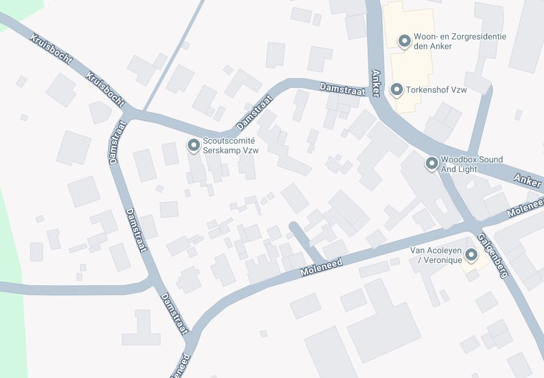
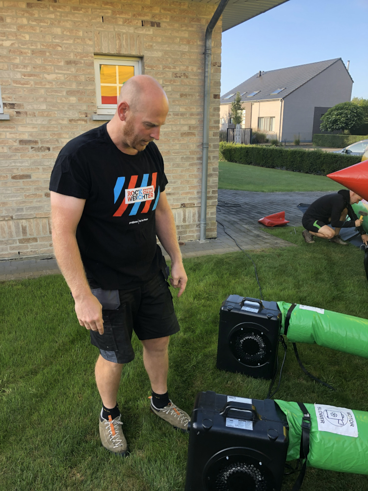
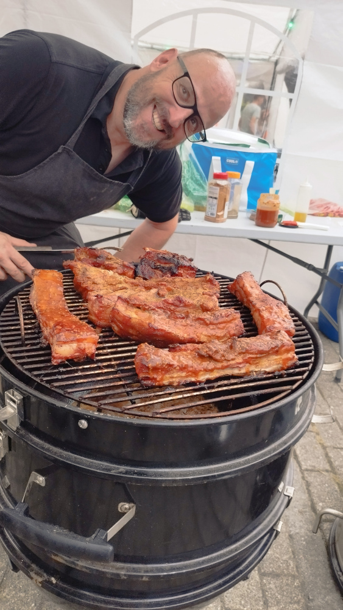

Welkom op de webpagina van het buurtfeest “De Damfeesten” in Serskamp.
In 2005 ontstond bij Damstraatbewoners Sam en Steven het idee om een buurtfeest te organiseren. Verschillende bewoners van de Damstraat kenden elkaar niet of kwamen nauwelijks met elkaar in contact. Daarom werd besloten een feest te organiseren waarop de volledige buurt werd uitgenodigd. Het feest werd meteen een succes: buren raakten met elkaar aan de praat en leerden elkaar beter kennen. In 2007 werd het organiserend comité versterkt door de culinaire duizendpoot Mario.
In de loop der jaren kwam er ook een winterdrink bij. Deze was aanvankelijk succesvol, maar werd later opnieuw afgeschaft omdat veel buurtbewoners door een drukke agenda niet meer konden deelnemen. Het buurtfeest zelf bleef echter bestaan en is tot op vandaag hét moment waarop buurtbewoners samen genieten van een hapje en een drankje, en waarbij de buurt nog hechter wordt.
Ook tijdens de moeilijke coronaperiode bleef de organisatie van de Damfeesten verbinden. Er werden wafels gebakken, kaartjes gemaakt en een buitenshuis minidrink georganiseerd om op een veilige, coronaproof manier de buren een hart onder de riem te steken.
Het buurtfeest is een jaarlijks evenement dat enkel mogelijk is dankzij de hulp en het materiaal van de buren. Daarnaast draagt ook de gemeente Wichelen haar steentje bij via een subsidie, die ervoor zorgt dat de prijs (en eventuele drempel) zo laag mogelijk kan blijven.
Elk jaar opnieuw is het een plezier om te zien hoe buurtbewoners genieten van het samenzijn en opnieuw met elkaar in contact komen.


Hij is al bij de start van het buurtfeest een van de trekkers van het buurtfeest.

Begonnen als de extra trekker van het buurtfeest sinds 2007

De buren springen altijd bij, van het op- en afbouwen van tenten, tafels en verlichting tot het mogelijk maken van het dessertbuffet. Met alle logistieke ondersteuning tijdens het feest wordt het mogelijk om dit buurtfeest elk jaar weer een succes te maken.